Vive le Québec libre ! L’aboutissement logique de deux siècles d’histoire tumultueuse de part et d’autre de l’Atlantique
par Richard LE HIR
Des liens si forts qu’ils ont résisté, et continuent de le faire, au passage du temps et à l’adversité…
Pour de très nombreux Québécois, le 50e anniversaire du « Vive le Québec libre ! » résonne beaucoup plus fort que le 150e anniversaire de la Confédération canadienne. La raison en est simple. C’est un anniversaire authentiquement québécois alors que l’anniversaire de la Confédération est un adversaire britanno-canadien, autant dire étranger.
Il ne peut y avoir preuve plus éloquente de ce fait que le refus de tous les gouvernements du Québec depuis 1982 de signer la Constitution de 1982. Le Québec n’est pas britanno-canadien quoiqu’on cherche à nous faire croire. Il ne se reconnaît pas plus dans la Constitution du Canada que le Canada ne reconnaît son caractère distinct. L’illustration parfaite de deux solitudes vivant côte à côte.
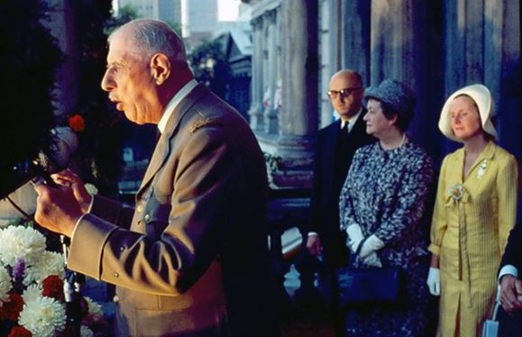Le 24 juillet 1967, depuis le balcon de l’hôtel-de-ville de Montréal, portant à dessein son uniforme militaire pour renforcer son effet, le général de Gaulle a libéré le Québec en quatre mots. Cent canons n’auraient pas eu plus d’effet. L’immense clameur de joie jaillie spontanément des tripes et du cœur de la foule présente et la vitesse à laquelle elle s’est propagée à travers tout le Québec sont absolument saisissantes.
Tout s’est passé comme si les Québécois n’attendaient ce moment depuis 17601 !
On croit généralement que la France et le Canada français n’ont entretenu aucun rapport pendant deux siècles. C’est faux. Bien entendu, l’Angleterre s’est opposé à tout rapport officiel pendant 90 ans. Il faudra attendre 1850 pour que le gouvernement britannique lève l’interdiction aux bateaux battant pavillon français de fréquenter les eaux territoriales du Canada :
« C’est en 1850 que cette mesure est abrogée. Désormais, les ports canadiens peuvent de nouveau accueillir des bateaux étrangers, une situation dont la France s’empresse de profiter. Napoléon III, porté au pouvoir en décembre 1851, soutient le nationalisme des peuples d’Europe. Aux côtés de l’Angleterre, il participe à l’expédition de Crimée, qui oppose, à partir de mars 1854, l’empire britannique aux armées russes du tsar Nicolas Ier. En juillet 1854, un navire de la marine française en provenance de Marseille, L`Édouard, visite le port de Montréal. C’est le premier navire militaire français à visiter le Canada depuis 1760.
Le deuxième est la majestueuse corvette La Capricieuse, montée de 240 hommes d’équipage, sous le commandement en chef de M. V. Bellevèze.[...]. »
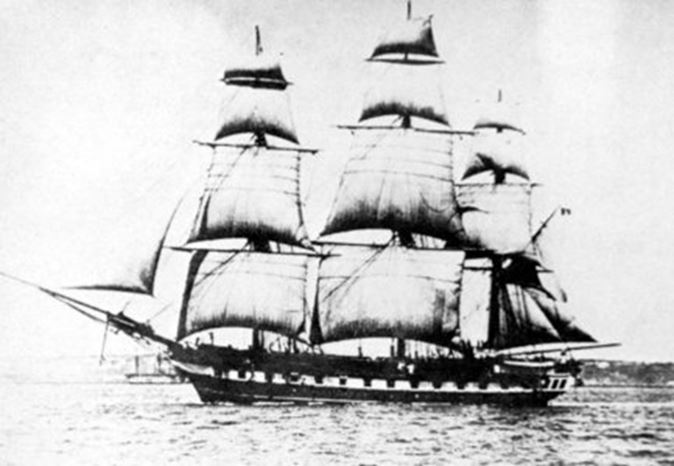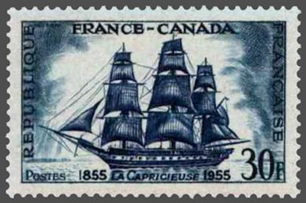Le 13 juillet 1855 mouille dans le port de Québec la corvette française La Capricieuse. Son commandant a une mission capitale : visiter le Canada Uni dans le but de développer des liens commerciaux entre la France et l’Amérique du Nord britannique. L’importance de cette mission est soulignée par le fait que les échanges entre la France et le Canada sont inexistants à l’époque ou presque, hormis de rares relations diplomatiques et quelques initiatives personnelles...
Il est vrai qu’entre 1760 et 1793, les rapports, même privés, entre la France et le Canada ont été inexistants, mais il faut comprendre que la France était alors dans tous ses états. La Guerre de Sept ans et les dépenses pharaoniques de la couronne française pour construire le palais du Louvre, le château de Versailles et ses aménagements intérieurs et extérieurs somptueux, avaient laissé la France financièrement exsangue et au bord de la révolution. Elle éclatera en 1789 et se prolongera pendant près de 10 ans.
On comprendra aisément que cette période n’ait guère été propice aux échanges transatlantiques entre le France et son ancienne colonie, d’autant plus que les Anglais veillaient et qu’il se passait en Amérique du Nord des événements importants, Acte de Québec (1774), révolution américaine, Guerre d’indépendance (1775 – 1783), etc.
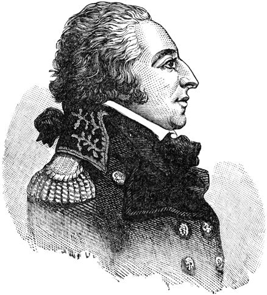Pourtant, dès 1793, alors que la Révolution française est encore en cours, la France envoie son nouveau représentant auprès des États-Unis, Edmond-Charles Genest.
Une fois sur place, celui-ci demande aux consuls de France à New-York et Boston de recueillir des renseignements sur l’état d’esprit des Canadiens et la situation dans cette colonie. Convaincu que les Canadiens sont mal disposés envers les Anglais, Genet entreprend bientôt une campagne de subversion afin de provoquer un soulèvement populaire. Il confie alors à un jeune Canadien de vingt ans, Henri Mézière, le texte d’une adresse des Français libres à leur frères du Canada qui doit exciter le ferment révolutionnaire des habitants francophones de la région du Saint-Laurent. Mézière passe la frontière avec 350 copies de l’adresse dans ses sacoches.
Une fois à Montréal, il en distribue des exemplaires à quelques amis, chargeant ces derniers de les faire circuler. Ce texte de 8 pages lance l’appel suivant aux Canadiens :
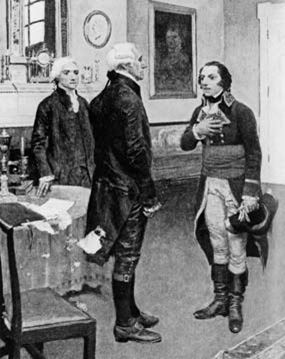« Imitez les exemples des peuples de l’Amérique et de la France. Rompez donc avec un gouvernement qui dégénère de jour en jour et qui est devenu le plus cruel ennemi de la liberté des peuples. Partout on retrouve des traces du despotisme, de l’avidité, des cruautés du roi d’Angleterre. Il est temps de renverser un trône où s’est trop longtemps assise l’hypocrisie et l’imposture. Ne craignez rien de George III, de ses soldats en trop petit nombre pour s’opposer avec succès à votre valeur. Le moment est favorable et l’insurrection est pour vous le plus saint des devoirs. Rappelez-vous qu’étant nés Français, vous serez toujours enviés, persécutés par les rois anglais, et que ce titre sera plus que jamais aujourd’hui un motif d’exclusion de tous les emplois »
Par peur de la délation et parce que les amis de Mézière ne croient pas que l’esprit populaire se porte vers de tels gestes, le texte ne sera jamais même distribué. Il parviendra tout de même aux autorités britanniques à Montréal et Mézière, dont la tête est mise à prix, va bientôt se réfugier aux États-Unis.
Qu’à cela ne tienne, Genet n’abandonne pas ses visées quant au Canada. Toujours en 1793, la flotte mutine de Saint-Domingue vient mouiller dans la baie de Chesapeake, au sud de Washington. Genet voit là l’instrument qui lui permet de porter un coup direct au Canada. Le 4 octobre, il donne l’ordre à l’amiral Sercey, qui commande cette flotte, de foncer au nord. Le plan de Genet est simple : reprendre Saint-Pierre et Miquelon, brûler ensuite les pêcheries anglaises de Terre-Neuve et Halifax, puis remonter le Saint-Laurent pour appuyer la révolte des Canadiens, auparavant excités par ses agents.
Le 12 octobre, la flotte de Sercey quitte Sandy Hook, puis… rentre en France !
Peu après le départ, un conseil naval tenu en mer a décidé du retour plutôt que d’exécuter les ordres de Genet. La flotte arrive à Brest le 12 novembre et Sercey ne semble pas avoir eu à se justifier de cette nouvelle mutinerie. De toute façon, eût-elle tenté de suivre le plan de Genet, la flotte française aurait rencontré un ennemi l’attendant de pied ferme. En effet, dès le 25 octobre, des espions préviennent les garnisons anglaises d’Halifax, de Frédéricton et de Québec de l’arrivée imminente d’une flotte française d’invasion.
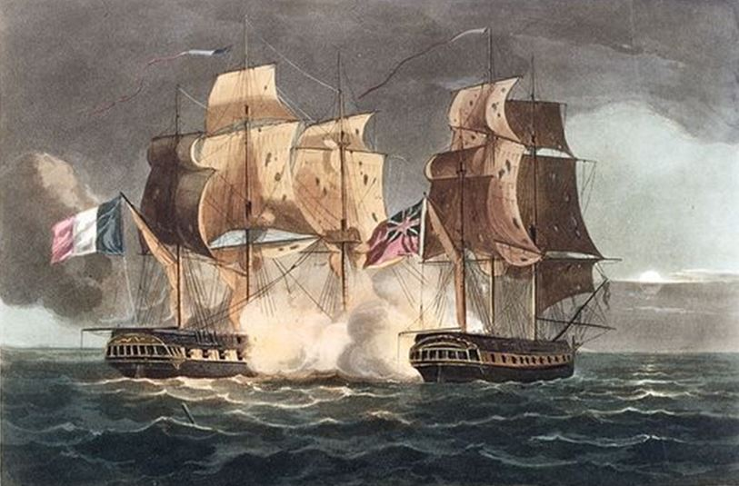La troisième et dernière action concrète visant à soustraire le Canada à la Grande-Bretagne a lieu en 1796. Un Américain nommé Ira Allen débarque alors à Paris. Là, il rencontre Carnot et lui expose un projet consistant à lui fournir plus de 20 000 fusils, 24 canons et une somme de 200 000 francs afin que ce dernier affranchisse les Canadiens qui n’attendent, selon lui, que cette occasion.
Le projet est accepté par le Directoire avec la recommandation spéciale de Carnot. Rappelons que c’est à cette époque que le Directoire prépare son expédition d’Irlande et que c’est durant ce même été 1796 que la volonté de la République d’en découdre avec Albion semble la plus affirmée. Armé et financé, Allen quitte bientôt le Havre avec son matériel mais il est arraisonné en mer par les Anglais et son navire sera mis sous séquestre pendant de nombreuses années.
Sous Napolépn 1er, ce seront les Habitants du Canada qui chercheront à renouer avec la France en priant l’Empereur de se porter à leur secours. Voici le texte d’une pétition qui lui est adressée en 1804 :
Les Habitants du Canada à
Sa Majesté l’Empereur des Français,
Napoléon premier
Sire,
Deux de nos compatriotes, Jean-Baptiste Noreau, âgé de soixante-quatre ans et Jean-Baptiste Noreau, son fils, âgé de vingt-deux ans, se rendent en France pour faire connaître à votre Majesté par l’organe de ses ministres les intentions bien prononcées du peuple canadien de retourner sous l’Empire de la France et porter de nouveau le nom glorieux de Français.
Nous avions projeté, Sire, de secouer le joug des Anglais ; nous attendions des fusils pour nous armer, et frapper un coup sûr. Mais notre espoir a été trompé. La surveillance des Milords, des Lords et salariés de tout genre échoueraient contre notre réunion et nos efforts, sous un bon général français, pénétré de ses devoirs et guidé par l’honneur.
Nous assurons Votre Majesté que nous sommes disposés à subvenir aux frais que cette entreprise exigera.
Les sentiments que nous manifestons aujourd’hui à votre Majesté sont nourris depuis longtemps dans nos ceours. Vous en avez la preuve, Sire, dans la lettre ci-jointe, écrite il y a cinq ans, à nous-mêmes par le Consul de New York.
Ce sont ces observations, ses conseils, qui nous ont porté à attendre jusqu’aujourd’hui dans l’espoir qu’il avait fait connaître au Consul général notre demande pour la transmettre en Europe au gouvernement français.
On remarque dans la lettre de ce Consul de New York qu’il n’y a mis ni date, ni signature. Quel en a été le motif ?
Sire, nous attendons de votre sollicitude paternelle que la paix ne se fera pas, sans que nous ayons repris le nom de Français Canadiens. Nous sommes prêts à tout entreprendre à la première vue des Français que nous regardons toujours comme nos frères.
Agréez Sire, les Voeux ardents que nous adressons au ciel pour le long règne de Votre Majesté. Recevez l’assurance de l’admiration que nous cause votre gloire et daignez accueillir l’hommage du dévouement sincère et du profond respect du peuple canadien.
Pierre Trudeau, âgé de 55 ans,
Paroisse de Longueuil
Eustache Martin, âgé de 55 ans,
Paroisse de St-Philippe
Louis La Plante, âgé de 70 ans,
Paroisse de St-Constant
Jean Lefebvre, âgé de 60 ans,
Paroisse de Chatoyer [Châteauguay ?]
Antoine Giraut, âgé de 70 ans,
Paroisse de Beloeil
Jean Léveillé, âgé de 53 ans,
Paroisse de Machecousse [Mascouche ?]
Charles Labarge, âgé de 50 ans,
Paroisse de Chatoyer
Dauphin Dupuy, âgé de 64 ans,
Paroisse de St-Constant
Joseph Landry, âgé de 50 ans,
Paroisse de Acadie
Préjean, âgé de 66 ans,
Paroisse de Chatoyer
André Noreau, âgé de 68 ans,
Paroisse de Longueuil
Vous aurez noté que le premier signataire de cette pétition se nomme Pierre Trudeau comme l’ancien premier ministre du Canada de la fin des années 1960 à 1984, en excluant le bref interrègne de Joe Clark en 1970 et 1980. L’Histoire a de ces ironies ! À moins qu’il ne s’agisse plutôt d’une leçon sur l’anglicisation progressive des esprits qui menace les Québécois tant qu’ils demeurent dans la Confédération canadienne
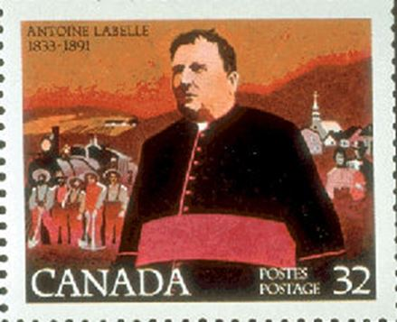Comme nous l’avons vu plus haut, un premier dégel officiel surviendra vers 1850. Les efforts de reprise des liens entre la France et le Canada seront toutefois coupés dans leur élan par une détérioration de la situation politique en Europe et la Guerre franco-allemande de 1870 qui se soldera par la Chute du Second Empire de Napoléon III et la perte pour la France de l’Alsace-Lorraine.
En 1882, le gouvernement du premier ministre du Québec Joseph-Adolphe Chapleau décide de nommer le journaliste Hector Fabre représentant du Québec à Paris.
Quelques années plus tard, en 1885, Honoré Mercier, le successeur de Chapleau envoie le Curé Labelle, sous-commissaire à l’agriculture et à la colonisation, en France pour tenter d’attirer au Québec des immigrants français. Il aura un certain succès auprès de congrégations religieuses pour prendre en charge la formation des agriculteurs et des jeunes femmes qui leur viendront en appui.
En 1888, Mercier se rend lui-même à Paris où il obtient auprès du Crédit Lyonnais les crédits qu’on lui avait refusé au Canada et à New York pour développer le Québec, au grand dam du premier ministre canadien d’alors, John A. MacDonald, qui avait orchestré ce refus.
Au sommet de sa popularité, Mercier est réélu en 1890 et retourne en Europe en juin-juillet 1891. Il visite le Vatican, la France et la Belgique. Selon ses adversaires, son comportement ressemble plus à celui d’un chef d’État qu’à celui d’un premier ministre provincial, ce qui ne manque pas d’indisposer fortement Ottawa. Quatorze ans après la Confédération, le triangle Paris-Québec-Ottawa est déjà très agité.
En avril 1893, Honoré Mercier qui n’est plus que député après avoir été évincé du pouvoir à l’occasion d’un scandale savamment manipulé pour se retourner contre lui, prononce les paroles suivantes lors d’un discours devant 6000 personnes au Parc Sohmer à Montréal :
« Quand je dis que nous ne devons rien à l’Angleterre, je parle au point de vue politique car je suis convaincu, et je mourrai avec cette conviction, que l’union du Haut et du Bas Canada ainsi que la Confédération nous ont été imposées dans un but hostile à l’élément français et avec l’espérance de le faire disparaître dans un avenir plus ou moins éloigné.
J’ai voulu vous démontrer ce que pouvait être notre patrie. J’ai fait mon possible pour vous ouvrir de nouveaux horizons et, en vous les faisant entrevoir, pousser vos cœurs vers la réalisation de nos destinées nationales.
Vous avez la dépendance coloniale, je vous offre l’indépendance ; vous avez la gêne et la misère, je vous offre la fortune et la prospérité ; vous n’êtes qu’une colonie ignorée du monde entier, je vous offre de devenir un grand peuple, respecté et reconnu parmi les nations libres.
Hommes, femmes et enfants, à vous de choisir. Vous pouvez rester « esclaves » dans l’état de colonie ou devenir « indépendants et libres » au milieu des autres peuples qui, de leurs voix toutes-puissantes, vous convient au banquet des nations. »
À partir de 1899 et jusqu’en 1902, le Canada se retrouvera engagé dans les guerres coloniales britanniques. Le Québec ne se sent pas concerné et refuse d’y participer. Les Canadiens-français s’étaient montrés bien plus ouverts à se porter volontaire pour défendre les états pontificaux quelques décennies plus tôt.
Au tournant du 20e siècle, la France des affaires s’étant alliée aux intérêts britanniques, l’heure n’est plus à la provocation. Deux Guerres mondiales et la Révolution russe vont reconfigurer le monde.
Au tout début de la Deuxième guerre mondiale, le général de Gaulle, sous-secrétaire d’État à la Défense et de la Guerre, ayant rang de ministre sans portefeuille dans le cabinet de Paul Reynaud, s’oppose à la capitulation de la France et part à Londres organiser la Résistance à l’occupation allemande.
Il effectue son premier voyage en 1944, comme le rapporte Radio-Canada dans ce document d’archives de Gaulle impressionne le Québec.
Date de diffusion : 12 juillet 1944.
Au cours de l’été 1944, le général Charles de Gaulle, président du gouvernement provisoire de la République française, visite les États-Unis et le Canada.
En juillet, le maire de Québec, Lucien Borne, et celui de Montréal, Adhémar Raynault, reçoivent en grande pompe le général Charles de Gaulle dans leurs villes. Radio-Canada diffuse les allocutions présentées par l’illustre personnage et par ses hôtes à Québec et sur le balcon de l’hôtel Windsor, à Montréal.
Le 12 juillet 1944, après une visite officielle à Ottawa, Charles de Gaulle se rend à Québec par avion. À l’aéroport de l’Ancienne Lorette, près de Québec, le général est reçu sous une pluie fine par les autorités civiles, militaires et religieuses de la ville. La fanfare du Royal 22e joue La Marseillaise afin d’accueillir dignement le symbole de la résistance française.
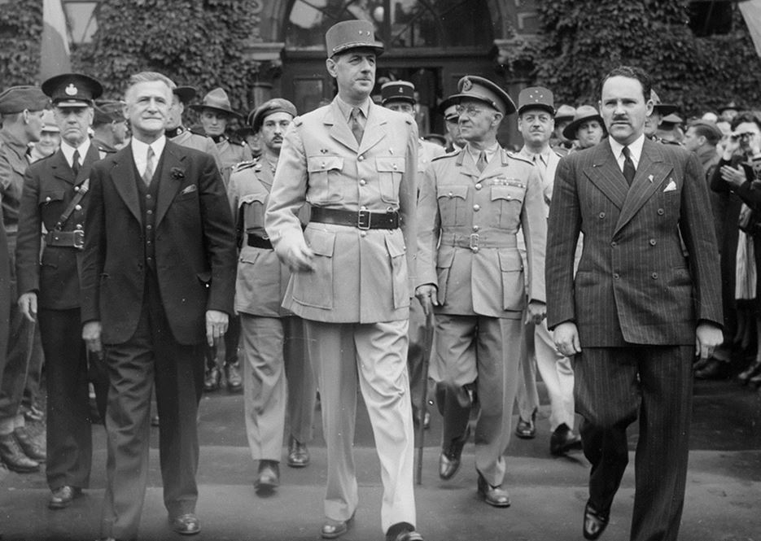
Le maire de Québec, Lucien Borne, le général de Gaulle et le docteur André Simard, sortant de l’hôtel de ville de Québec, le 12 juillet 1944
Dans un discours prononcé à l’hôtel de ville de Québec, le général lance un « Vive le Canada français » sous un tonnerre d’applaudissements.
Charles de Gaulle se rend à Montréal après sa visite à Québec. À son arrivée à l’aéroport de Dorval, le général est accueilli par le maire Adhémar Raynault, puis il passe en revue un détachement de l’Aviation royale canadienne.
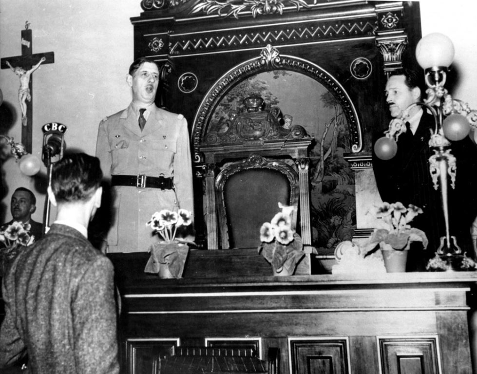
Le général de Gaulle s’adresse aux journalistes réunis à l’hôtel de ville de Québec, lors de son passage dans cette ville le 12 juillet 1944. Le docteur André Simard, à droite, l’accueille au nom du Comité France libre de Québec, sa présidente et fondatrice Marthe Simard se trouvant à Alger
Au cours de son passage, de Gaulle dépose une couronne au pied d’un cénotaphe érigé au parc Lafontaine à la mémoire des Français morts pendant la Première Guerre mondiale. À l’hôtel Windsor, face au carré Dominion, il est bruyamment salué par une foule lors d’une brève apparition.
De Gaulle revient très brièvement au Canada en 1945 après l’explosion des bombes atomiques américaines au Japon. Ce deuxième voyage du général de Gaulle effectué en Amérique du Nord avec un passage bref au Canada, comme chef de gouvernement cette fois, du 28 août au 29 août 1945, lui permet de comprendre à chaud les répercussions politiques de l’explosion des bombes atomiques américaines sur Hiroshima et Nagasaki ainsi que d’ouvrir la voie aux premières demandes d’aide matérielle dans laquelle le Canada a offert son grenier à blé et son arsenal industriel moyennant un emprunt aux conditions politiques avantageuses. Son séjour, prolongement encore une fois d’un périple américain destiné à prendre contact avec le nouveau président Truman, se limite strictement à Ottawa. Charles de Gaulle, souvent accusé de ne pas s’occuper de l’intendance, vient alors chercher au Canada du blé et des navires ainsi qu’un prêt à long terme pour les financer. »
De Gaulle quitte le pouvoir en 1946 et le reprend en 1958. Dès son retour, il demande à ses services de préparer une visite au Canada en 1960. Il a déjà son plan en tête en ce qui concerne le Québec qui n’est encore pour lui que le Canada français.
Malgré les problèmes que connaît alors la France en Algérie et qui affectent la façon dont elle est perçue sur le plan international, ce voyage sera un succès comme en témoigne éloquemment ce compte-rendu exhaustif découvert sur le site de la Commission franco-québécoise sur les lieux de mémoire communs, et intitulé « Le voyage de de Gaulle au Canada en avril 1960 et les relations France-Québec ».
La dimension stratégique de ce voyage est d’ailleurs si importante qu’elle a inspiré à un chercheur français de l’Université Ryerson de Toronto l’article intitulé « La visite du Général De Gaulle au Canada en 1960 dans l’ombre de la crise algérienne », publié en 2008.
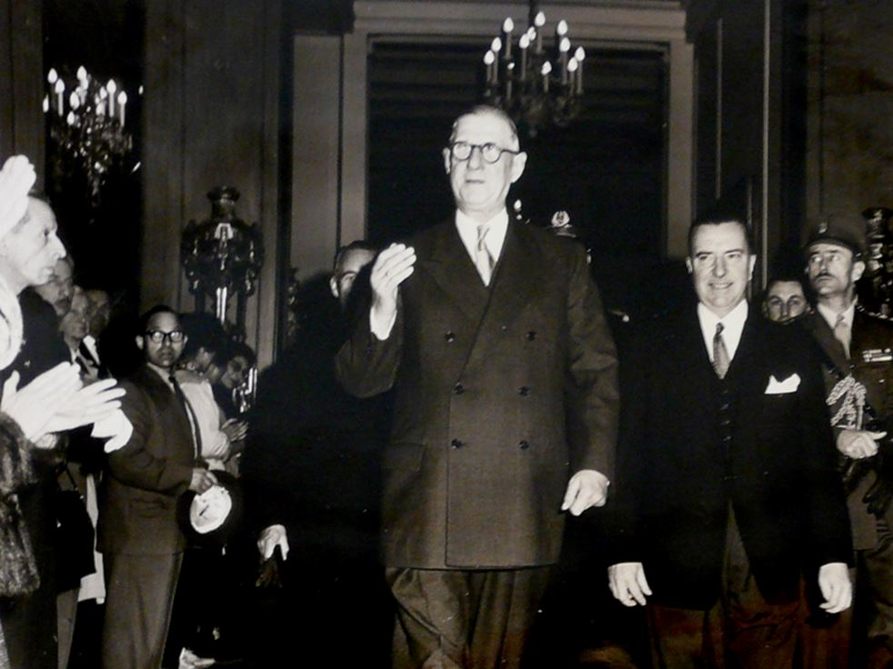Entre 1960 et 1967 vont se multiplier les contacts entre les gouvernements du Québec et le gouvernement français qui permettront de donner à la visite du général de Gaulle en 1967 toute la profondeur et l’éclat qu’elle était appelée à connaître.
Parallèlement, De Gaulle multiplie les interventions internationales et acquière un statut de grand défenseur du droit des peuples à disposer d’eux-mêmes. Ainsi, le 28 septembre 1964, De Gaulle déclare en Bolivie :
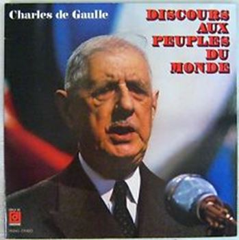 Pochette du disque « Charles De Gaulle, Discours aux peuples du monde », Disques Déesse DDLX 87, Paris« Que chaque peuple dispose à tous égards de lui-même, afin que son avance en fait de civilisation soit effectivement la sienne. Qu’il fasse en sorte que son progrès soit celui de tous ses enfants pour susciter dans les profondeurs les ardeurs et les capacités qui multiplient les efforts, qu’il transforme en émulation créatrice et productrice par rapport aux autres nations ce qui demeure trop souvent rivalité d’ambitions, que les puissances qui en ont le moyen prêtent leur concours au développement des moins avantagés, cela suivant les affinités réciproques, et sans qu’il y ait, sous aucune forme, intervention étrangère dans les affaires de qui que ce soit, voilà, en effet, quelles sont, pour la France, les conditions nécessaires de l’équilibre général, du progrès de tous et de la paix dans l’univers. »
En Amérique Latine que les Américains traitent comme leur cour arrière depuis l’énonciation de la doctrine « L’Amérique aux Américains » de l’ancien président James Monroe, le message du général produit l’effet d’un tremblement de terre de force 8 sur la scène politique.
À Phnom-Penh, au Cambodge le 1er septembre 1966, De Gaulle s’en prend directement à la soif de guerre des États-Unis. Voici le commentaire du professeur François Asselineau, président du parti UPR et candidat à la dernière campagne présidentielle française :
« Le 1er Septembre 1966, présent dans la capitale Cambodgienne, le Général de Gaulle prononce devant plus de 200 000 personnes, le « Discours de Phnom-Penh ». Ce discours est un des plus habiles de l’histoire politique de l’humanité. En effet, tout en rappelant l’indépendance de la France, il affirme l’existence d’une troisième voie représentée par les non-alignés.
Cependant, le Général de Gaulle est également visionnaire et marque un tournant dans la manière d’envisager les relations Internationales pour les anciennes puissances coloniales. Ces propos ont été ressentis à l’époque comme une gifle et une trahison par les Américains alors en guerre au Vietnam.
Les Américains, outrés, n’ont alors pas compris toute la subtilité et les nuances de ces paroles car il rend aussi un hommage aux valeurs de libertés qui fondent la démocratie américaine. Ils n’ont pas non plus saisi la lucidité de ses propos. En 1968, c’est à Paris que s’ouvrira la conférence qui mettra fin à la guerre du Vietnam (la guerre la plus inutile et la plus chère de l’histoire des Etats-Unis après la guerre d’Irak).
Ce qui est impressionnant, c’est qu’après plus de 40 ans, ces paroles résonnent encore d’une manière originale et sont plus que jamais d’actualité concernant par exemple la guerre en Afghanistan. »
L’été suivant, le 24 juillet 1967, De Gaulle, venu rendre visite à son « ami Johnson » à l’occasion de l’Expo 67, lançait son « Vive le Québec libre ! » depuis le balcon de l’Hôtel de ville de Montréal. À lire ce qui précède, on comprend facilement que cette déclaration était loin d’être spontanée, qu’elle était mûrement réfléchie et qu’elle procédait d’un plan bien défini. On n’est pas général pour rien.
D’ailleurs, cette analyse est confirmée par un de ses intimes, Jacques Foccart, qui relate son échange avec De Gaulle le 27 juillet 1967 dans son Journal de l’Élysée paru chez Fayard en 1998 (t. I, p. 685), au cours duquel le général lui aurait déclaré ceci :
« Le fait est qu’un jour le Canada français deviendra une grande puissance et que nous y aurons aidé et que la France en tirera un bénéfice. Bien sûr, pas moi. Ce n’est pas pour tout de suite, bien que, du fait de notre attitude, nous ayons considérablement accéléré le processus. C’est une affaire dont l’avenir s’inscrit d’avance, et de manière certaine depuis notre action, et le développement, croyez-moi, sera beaucoup plus rapide qu’on ne le croit. […]
Il fallait le faire, c’était évident. Je savais à quoi m’en tenir à partir du moment où j’y allais. Alors on m’a dit : Ottawa… Ottawa, je m’en fous ! C’est au Canada français que je rendais visite, c’était l’essentiel. […]
J’aime mieux crever que d’aller au Canada porter un toast à la reine d’Angleterre ! Croyez-moi, j’étais bien soulagé quand ils m’ont offert l’occasion de m’en aller : j’ai sauté dessus avec bonheur.
Tout cela va faire des remous, c’est sans importance. Tout cela va donner des motifs d’articles à toute cette presse infâme et avachie, aux pieds et à la botte des Américains, des Israéliens et de tous les autres, mais qui ne soutient pas la France parce qu’ils ont honte de parler de la France ou de défendre la France : tout cela est sans importance. »
Le dernier mot revient à De Gaulle lui-même. En réponse à ses détracteurs qui ne cessent de l’accabler, il profite de sa conférence de presse du 27 novembre 1967 pour expliquer ses « quatre mots » devenus célèbres du 24 juillet précédent, en réponse aux questions du journaliste québécois Pierre Saint-Germain, alors correspondant de La Presse ou de Radio-Canada à Paris2.
Non seulement répète-t-il ses quatre mots avec la délectation gourmande de l’espiègle fermement convaincu d’avoir réussi un bon coup et pressé de river leur clou à ses détracteurs, il les explique avec abondance. Cinquante ans plus tard, ses mots et ses explications conservent toute leur pertinence. Et à chaque fois qu’on les écoute, on est surpris d’y trouver un écho aux propos cités plus haut de l’ancien premier ministre Honoré Mercier au parc Sohmer en 1893.
Les paroles du général ont déjà libéré le Québec en partie. Il reste aux Québécois d’achever la tâche. Ils le feront lorsqu’ils auront devant les yeux la preuve de la nécessité absolue de l’indépendance et de son inévitabilité pour assurer la défense et la promotion de leurs meilleurs intérêts. Le mouvement sera alors si fort qu’il sera irrésistible, peu importe le parti au pouvoir.
Restez aux aguets, ce moment n’est plus si loin. Les bases politiques, économiques, et culturelles de notre système sont de plus en plus fragiles, comme les événements quotidiens ne cessent de nous le rappeler. Le château de cartes est sur le point de s’écrouler. Lorsque cela se produira, il faudra nous souvenir de qui nous sommes et des leçons du général. Notre survie aussi bien individuelle que collective en dépendra.

Partager cette page